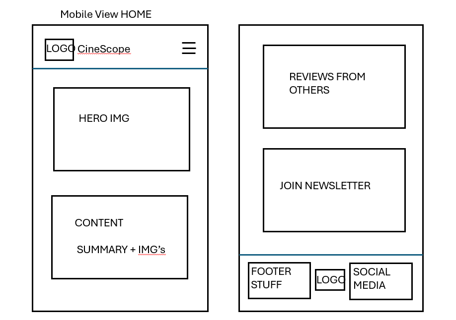
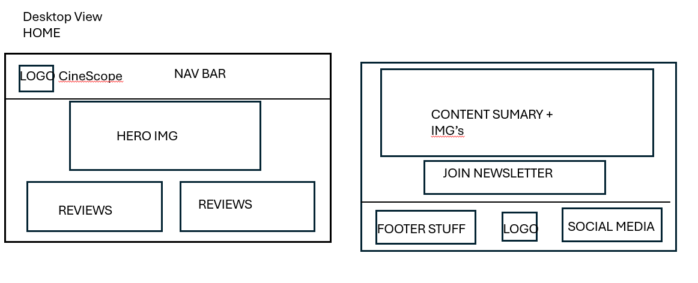

This name was selected because it represents a wide view of movies, like a "scope" into cinema. It is short, memorable, and directly related to the purpose of the site.
The purpose of this website is to provide users with information about different movies, including their genre, release years, and descriptions. The site will allow users to explore a collection of movies, view detailed information, anf interact with the content through features such as modals.
The website will use a dark red for the header, footer, and key interface elements to create a cinematic look inspired by movie theater aesthetics. A light gray will be used as the main background color for the body to improve readability and provide a clean layout. Yellow and white will be used for accents, such as buttons, highlights, and interactive elements, inspired by popcorn and classic cinema colors.
Open Sans will be used for general text because it is clean and easy to read. Montserrat will be used for headings to give a modern and structured look.

